Know who will make your order
Before you place an order, I can visit the factory to check who will produce it, what the site can handle and which claims still need evidence.
Shenzhen-based · 10+ years of China-side experience
Practical supplier follow-up, local project execution and quality support for overseas teams handling custom, low-volume and inspection-sensitive projects in China.

Bella ChengChina Sourcing & Project Execution
Where I add the most value
Core support
Get clear answers from factories and a local point of contact to follow up on samples, production and shipment.
Before you place an order, I can visit the factory to check who will produce it, what the site can handle and which claims still need evidence.
Send me your drawings, sample or problem part. I’ll work through materials, dimensions and acceptance criteria with the factory so you can review the sample against what you actually need.
If you already have suppliers, I can follow up locally on samples, changes and delays. You’ll know what’s been agreed, what’s still open and who needs to act next.
Agree on what needs checking, from labeling and packaging to key dimensions. I’ll document what I find so you can approve shipment or request corrections while the goods are still in China.
Discuss Your Project Share what you’re buying, where it stands and what you need checked in China.
See what I checked on the ground, what remained open and what buyers could do next.
View all case studies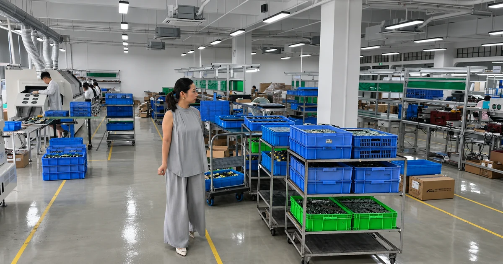
Two buyers joined site visits remotely. One needed to verify who would make an approved part. The other needed evidence that a factory could build a specific display.
See a sample audit summary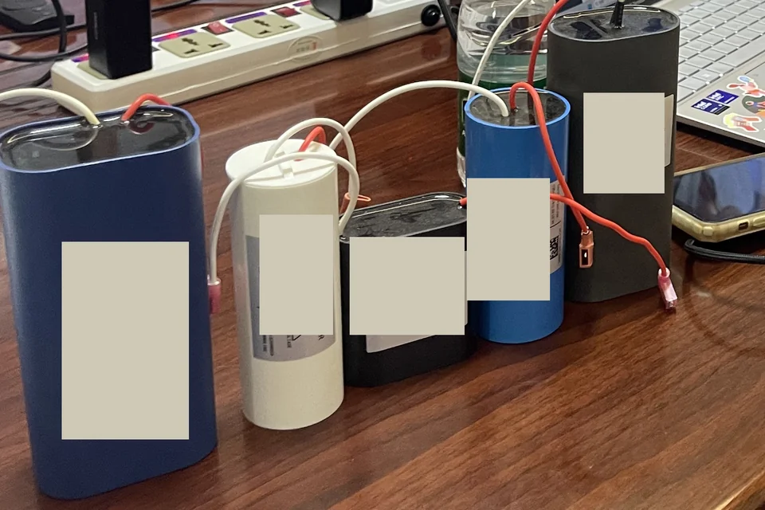

A Korean manufacturer needed a view of China's market. An Indian buyer needed to understand which suppliers could support a custom adapter and its certification.
Read the market and certification cases
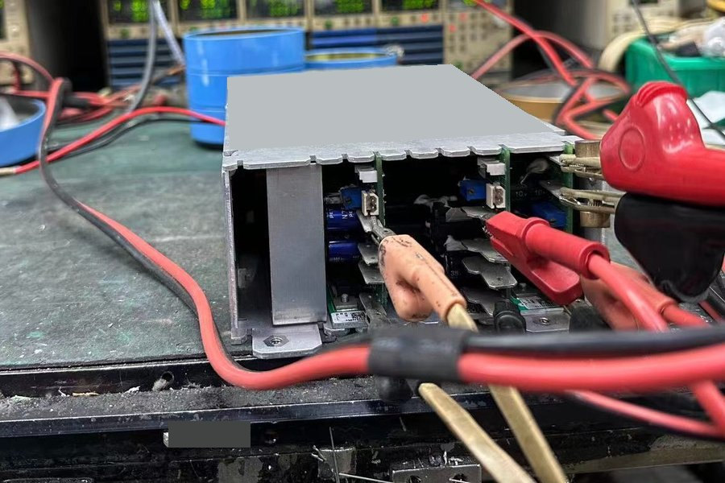
Examples include replacing an obsolete part, consolidating R&D samples and documenting three equipment models for local assembly.
Read the sourcing execution cases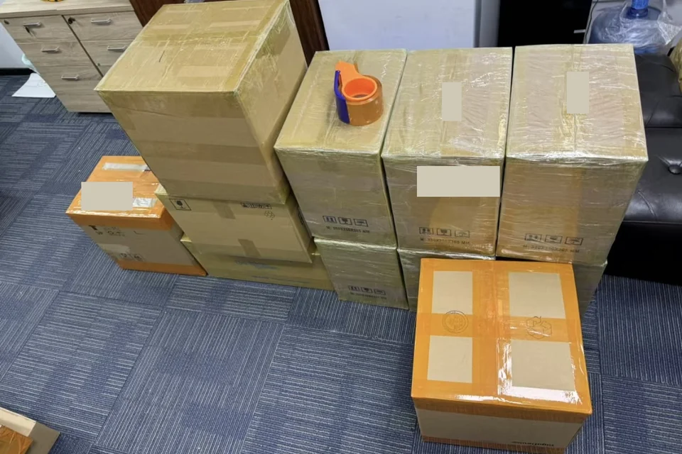
About Bella
I'm based in Shenzhen and have spent more than a decade supporting overseas buyers. I can work with suppliers you already have, visit when the project calls for it, and report what I observed, what the supplier told me and what still needs checking.
Meet the TeamBella is your main point of contact. She brings in the right team members for your technical reviews, factory follow-up, inspections, payments and shipments.

Client & Project Lead
Your point of contact for requirements, progress and decisions.
Technical Project Coordinator
Reviews drawings and follows up on factory feedback and sample revisions.

Quality Inspection Coordinator
Documents inspection findings and discrepancies for your review.
Supplier & Production Coordinator
Tracks production dates and follows up on open issues with factories.
Payments & Logistics Coordinator
Coordinates approved payments and shares dispatch and tracking updates.
A look at how we work with suppliers and follow up on your project in China.
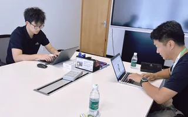
Clarify requirements directly with the supplier.
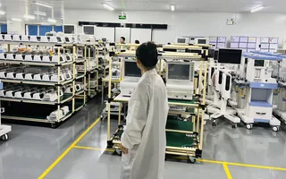
See what can be verified on site.
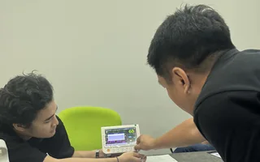
Review the sample before approving changes.
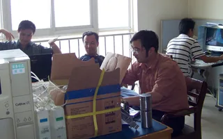
Clarify packing and dispatch details.
Meetings, equipment discussions and trade show visits with buyers from different markets.
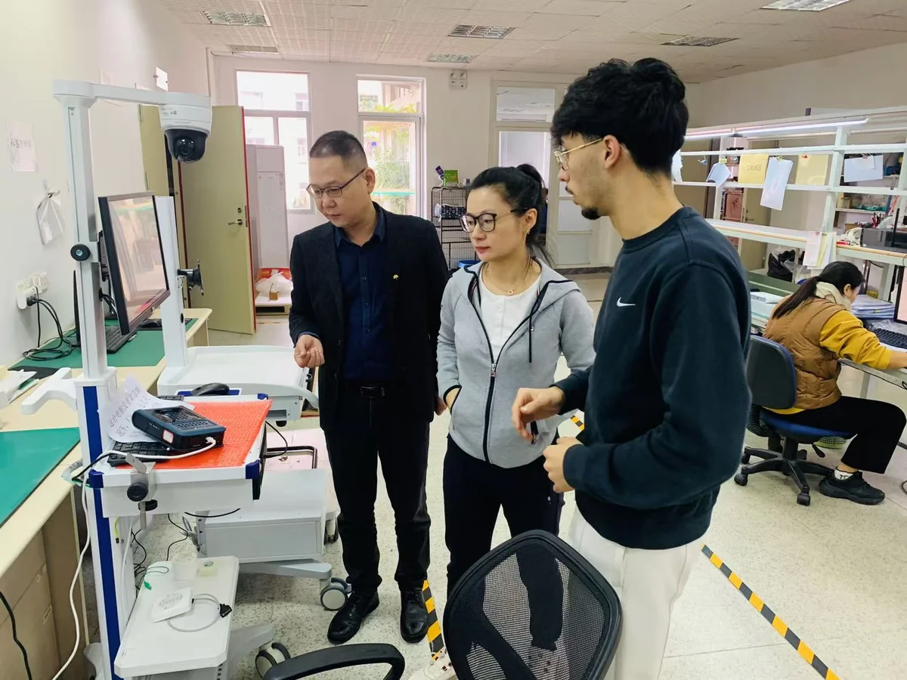
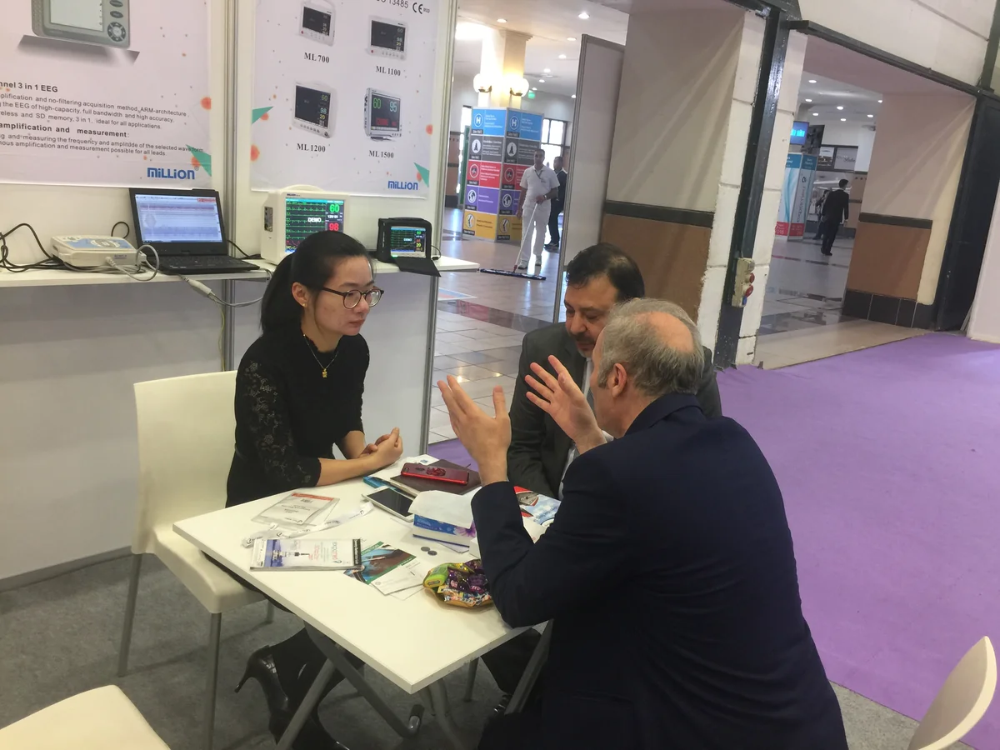
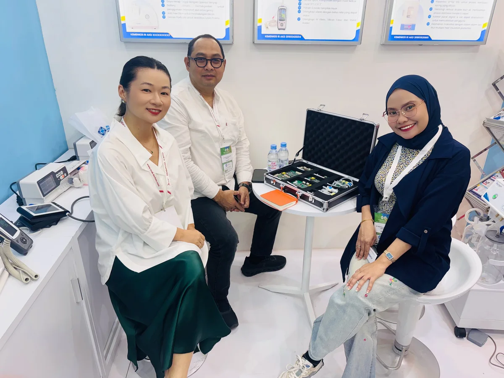
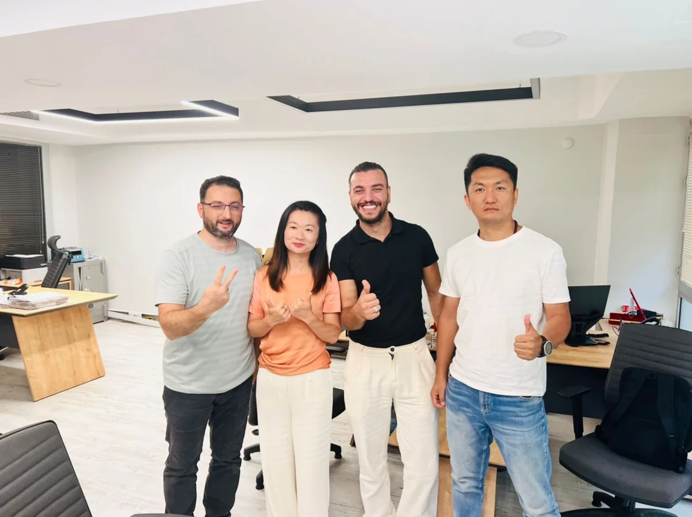
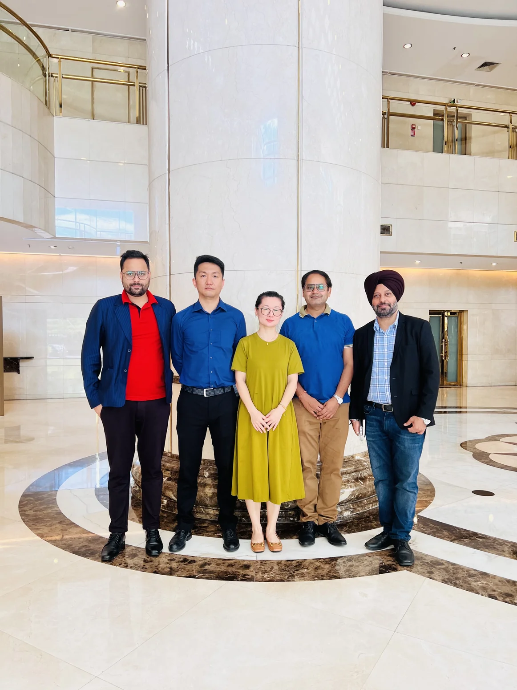
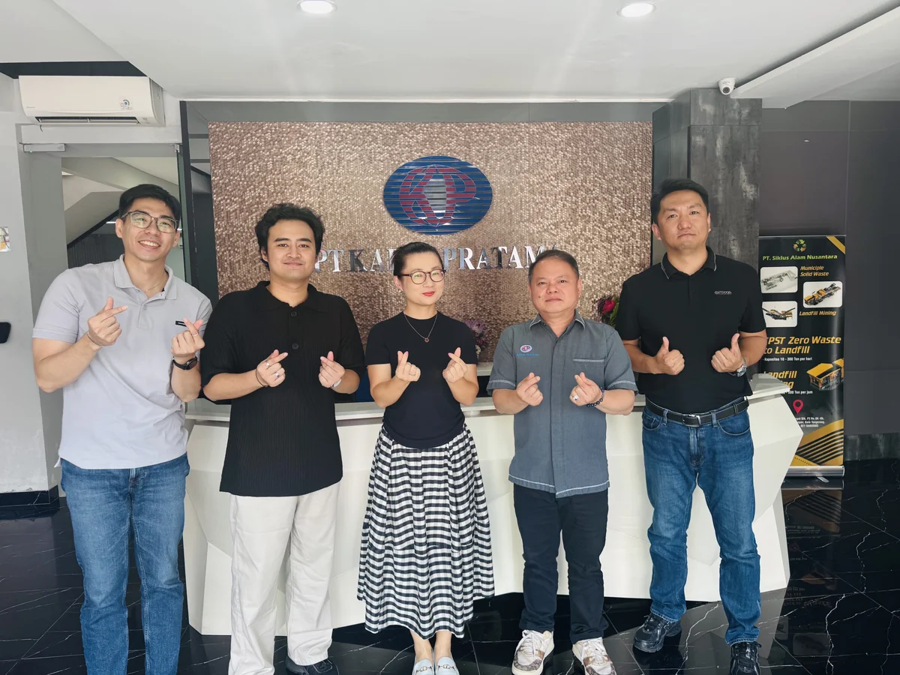
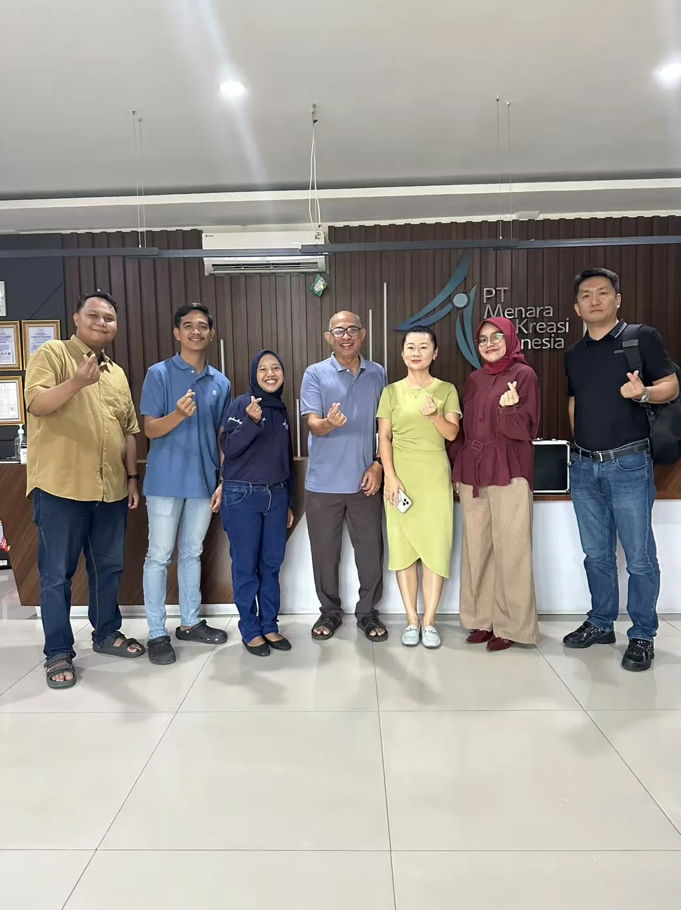
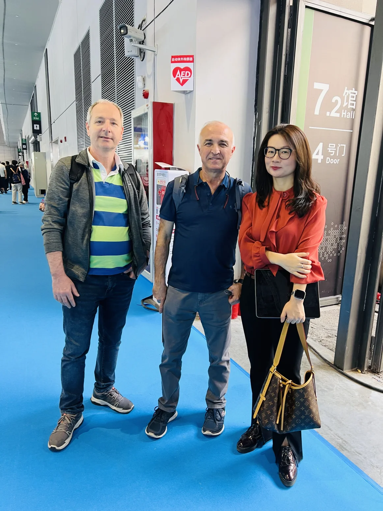
Latest Field Notes
Define the requirement, verify against it and check before shipment.
Read the field note → Supplier VerificationHow to evaluate evidence beyond the website and quotation.
Read the field note → Local ExecutionThe local tasks that still need an owner when your team is overseas.
Read the field note →Start with the real problem
Send the product, quantity, current stage, timing and the concern you need solved.